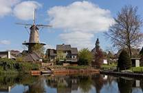
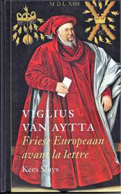
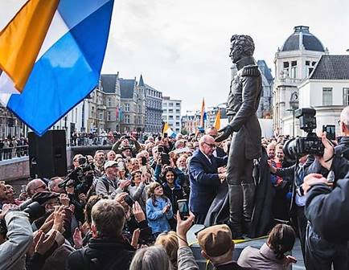
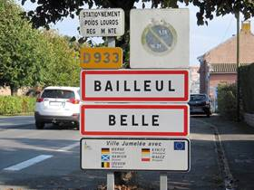
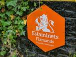
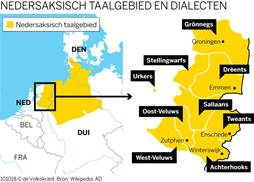

> nieuwsbrief
> jg. 37 - 1e trimester 2019
Bijdragen over:
|
Hernieuwen
ledenbijdrage voor 2019
Hoewel we,
zoals elk jaar overigens, straks weer geconfronteerd zullen
worden met de uiteraard weer eens naar boven aangepaste
posttarieven, blijft uw ledenbijdrage voor 2019 ongewijzigd. Ze
beloopt voor het in mei 2019 te verschijnen nieuwe 41e - Jaarboek
De Nederlanden extra muros en
voor de driemaandelijkse Nieuwsbrief Zannekin
29 . Vanaf 35 wordt u met dank als steunend lid geboekt.
Betalen kan
enkel nog via ons Belgisch zogenaamd Europees rekeningnummer
iban BE13 4648 2202 5139 bic: KREDBEBB BE, waarvan de
rekeningoverzichten ons dagelijks meegedeeld worden. Enkel
leden buiten België vinden bijliggend nog een betaalformulier.
Gezien veelal via e-banking vereffend wordt worden deze binnen
België stilaan overbodig. Leden genieten bovendien ook
een tastbare vermindering op de deelnamekosten van de Zannekin-activiteiten.
Oude
jaargangen van de Zannekin-Nieuwsbrief
Via deze
website zal men eerstdaags - onder de link 'Oude
Nieuwsbrieven' alle Zannekin-Nieuwsbrieven
kunnen raadplegen. De jaargangen 1983 (de
eerste) tot en met 2000 bestonden tot nog toe alleen maar op
papier en op deze website. Daar komt straks verandering in: deze
tot nog toe niet digitaal nog niet beschikbare jaargangen werden
ingescand en zullen eerstdaags beschikbaar zijn via onze
webpaginas. Ze zullen bovendien doorzoekbaar zijn via
zoektermen die het consulteren ervan vlot mogelijk zal maken.
Zannekin-Ontmoetingsdag 2018 in Ravenstein
Op 13 oktober
ging naar jaarlijkse traditie de herfstontmoeting door van de
Vereniging/Stichting Zannekin. Ditmaal was het oude
vestingstadje, het Kleefse Ravenstein aan de Maas het doel.
De
geschiedenis van dit lieflijk stadje begon in 1360, toen
Walraven van Valkenburg zijn kasteel van Herpen verplaatste naar
een plek aan de Maas. Uiteraard met de bedoeling tol te kunnen
eisen van de voorbijvarende schepen. Al in 1380 kreeg Ravenstein
stadsrechten van Reinout van Valkenburg. Na de voormiddag met
een korte filmprestatie over de barokke St. Luciakerk in het
oude Raadshuis en een stadswandeling volgde in de namiddag de
hoofdbrok, dat geheel in het teken stond van Filips van
Kleef-Ravenstein. Wij putten uit de tekst van de Nieuwsbrief van
de organisatoren: Filips van Kleef-Ravenstein werd geboren in
Le Quesnoy, jammer genoeg nu Frans, toen nog Nederlands, in 1459
en stierf in het kasteel van Wijnendale in West-Vlaanderen op 28
januari 1528. Hij was tevens heer van Ravenstein, Wijnendale en
Edingen. Door familiebanden speelde hij een belangrijke rol in
de Nederlanden op het einde van de 15e eeuw en de eerste
decennia van de 16de eeuw. Zo werd hij o.a. in 1477 door Maria
van Bourgondië en haar echtgenoot Maximiliaan van Oostenrijk
aangesteld tot militair bevelhebber van Frans-Vlaanderen en
bestreed hij met afwisselend succes de invallen van de Franse
legers. In 1482 kreeg hij de opdracht de orde in Luik te
herstellen na de moord op Prins-bisschop Lodewijk van Bourbon
door Willem van der Marck, le senglier des Ardennes. Hij
trouwde in 1485 met Francisca van Luxemburg, dochter van de
toenmalige kasteelheer van Edingen. Tot zo ver het
belangrijkste. Wim van Heugten leidde ons in in het ontstaan van
de banden tussen Kleef en Bourgondië rond 1400 en de banden
tussen Wijnendale en Ravenstein, die zeer intens waren, ook
cultureel. Jan van Tongeren ging dieper in op het optreden van
Filips van Kleef tijdens het onderdrukken van de 2 opstanden
(1483, 1487) tegen Maximiliaan in Brugge, Gent en Ieper. Om
volledig te zijn: in 1609 werd het land van Ravenstein
toebedeeld aan de keurvorst van Brandenburg en de hertog van
Neuburg. Terwijl prof. dr. Jan van Mourik (universiteit
Nijmegen) nader inging op de persoonlijkheid van Filips van
Kleef en vooral zijn rol als vestingbouwer van Ravenstein.
Vergeten wij
immers niet dat Ravenstein altijd al een grensstadje is geweest
tussen Brabant en Gelderland. In 1509 werden de vestingwerken
hernieuwd, maar het was Maria van Hongarije, landvoogdes der
Nederlanden, die in 1544 de opdracht gaf ze af te breken. De
sloop werd evenwel nooit helemaal voltooid.
Vermelden wij
nog dat het pas in 1988 was dat onze professor als bij toeval,
bij het bouwen van een tuinhuisje in zijn tuin stuitte op deze
vestingen.

Zicht op de
windmolen van Ravenstein
Het heeft heel
wat moeite gekost om de stad Oss (waarbij Ravenstein nu behoort)
te overtuigen de nodige gelden ter beschikking te stellen om dit
alles te bewaren en zo veel mogelijk te restaureren. De
herfstontmoeting werd afgesloten met een wandeling via het
Philips van Kleefbolwerck naar de stellingmolen met de
stadsbrouwerij De Wilskracht, dit alles eveneens onder de
deskundige leiding van de professor. Waar afgesloten werd met
een heerlijk streekbiertje. In elk geval mogen wij de Stichting
Vestingwerken Philips van Kleef van harte feliciteren voor het
werk tot bewaren van dit alles dat ze geleverd heeft. Het stadje
zelf is heel bekoorlijk, wij hebben er van harte van genoten
(geholpen uiteraard door het prachtige nazomerweer). Genoten we
van de schoonheid van zijn oude straatjes, we hebben er ook met
respect naar gekeken. Hier heeft zich immers een belangrijk stuk
uit onze geschiedenis afgespeeld. Valkenburg, Kleef, Le Quesnoy,
Wijnendale, Edingen, Ravenstein (om de stenen van de vesting
niet te vergeten die uit
Namen kwamen!), dit alles toont de
verwevenheid van onze Nederlandse gewesten méér dan voldoende
aan.
Bron: Brief uit de Rijn-, Maas-,
Schelde-delta, nr. 6/2018
Toen ik als piepjonge betoger in Brussel
marcheerde in de Marsen op Brussel in he begin van de jaren
zestig van de vorige eeuw werden wij verwelkomd door rabiate
Franstalige tegenbetogers met een plakkaat waarop stond: Keer terug naar uw dorp!
Mijn zes jaar oudere broer Antoon en ikzelf waren toch wat
verbaasd.
Wij kwamen beiden uit de oude stad Brugge
wat toch bezwaarlijk een dorp kon worden genoemd. En vele andere
betogers kwamen uit Antwerpen, Gent, Mechelen en Kortrijk wat
ook toen toch al geen dorpen waren.
De minachting die uit deze slogan sprak
betekende toen dat wij werden beschouwd als kleine domme boeren
die geen Frans konden of wilden spreken en die de pretentieuze
grootstad Brussel toen twee keer onveilig maakten met die
massale optochten of die Marsen op Brussel.
Vele decennia later woon ik al meer dan
twee decennia in Brussel en zou ik o ironie van mijn levenslot
graag in een landelijk rustig dorp wonen zoals bij voorbeeld
Grimbergen (dicht bij de abdijkerk), of in Gooik, in Herne, in
Kester, in Galmaarden of zelfs in Bever.
Het is ook nooit goed en het komt ook
nooit meer goed met mij. Of moet ik vluchten of uitwijken naar
verfranste badplaatsen als De Panne en Knokke-het-Zoute?
Nee toch. Voorlopig blijf ik in mijn
getto van Schaarbeek te midden van het fijn stof, de ongezonde
lucht en de vervuilde straten en zal ik u allen blijven bestoken
met mijn waarheden vanop mijn waarheidsgronden aan de overwelfde
ondergrondse Zenne.
Hendrik
Carette
Tien Waalse gemeenten investeren extra in
het promoten van de Waalse talen. Dat gebeurt op initiatief van
Franstalig minister van Cultuur AIda Greoli (cdH). De regionale
talen in Wallonië zijn immers met uitsterven bedreigd. Slechts
10 procent van de bevolking bezuiden de taalgrens spreekt ze
nog.
Wat hebben Charleroi, Durbuy, Luik, Hoei,
Namen, Gerpinnes, Malmedy, Sivry-Rance, Gesves en Blegny gemeen?
Het zijn de tien Waalse steden en gemeenten die het gebruik van
de Waalse talen opnieuw een impuls willen geven. Zo zullen
webstekken van gemeenten zowel in het Frans als in een Waalse
taal beschikbaar zijn. Straatnaamborden zullen naast het Frans
ook een regionale variant krijgen. In bibliotheken komt een
afdeling met aandacht voor de Waalse talen.
De term 'taal' is op zijn plaats, want
het Waals, Gaumais, Picardisch of Champenois zijn geen
dialecten, maar echte talen die de voorbije tweehonderd jaar
door het Frans zijn weggedrukt. Men vergeet vaak dat het in
Vlaanderen indertijd zo gehate 'signum' een Waalse variant heeft
gekend. Wie indertijd op Vlaamse colleges op de speelplaats een
Vlaams dialect sprak kreeg een 'signum'. Meestal ging het om een
rol papier waarop leerlingen hun naam moesten schrijven als ze
betrapt werden op het spreken van hun moedertaal of dialect.
Vervolgens probeerden ze het door te geven aan een medeleerling,
die zij op hun beurt betrapten. Wie op het eind van de
speeltijd, de dag of de maand, het signum in handen had, werd
gestraft, soms met een geldboete. In Waalse scholen werd deze
praktijk ingevoerd om het gebruik van het Waals tegen te gaan.
Bezuiden de taalgrens is de verfransing veel beter geslaagd.
De Franstalige minister van Cultuur Alda
Greoli wil dat Waalse patrimonium nu dus herwaarderen. Ze kreeg
daarbij de steun van Michel Francard, professor aan de UCL en
specialist van de Waalse regionale talen. In La Libre Belgique werd
vorige vrijdag uitgebreid ingezoomd op het initiatief. De tijd
is voorbij dat men het spreken van Waals en aanverwanten als
achterlijk beschouwt. Vaak wordt vergeten dat op de
RTBF-televisie en -radio nog lange tijd programma's in de Waalse
taal werden gepresenteerd.
Ducasse
In 1920 sprak ongeveer 80 procent van de
inwoners van Wallonië nog een Waalse taal. Ondertussen is dat
gedaald tot 10 procent. Bepaalde talen worden nog slechts door
enkele honderden mensen gesproken, zoals het Champenois (in de
streek ten westen van de Ardennen, bij de Franse grens) en het
Gaumais (Virton).
Zij zijn met uitsterven bedreigd. Het
Waals leeft nog sterk in het Luikse. En het Picardisch blijft
overleven in het westen van de provincie Henegouwen. Er zijn
trouwens grotere verschillen tussen de talen dan men denkt. Het
woord 'ducasse' voor kermis is typisch Picardisch. In die taal
vind je veel woorden meteen Angelsaksische oorsprong. Zoals
'kè', wat dragen betekent en afstamt van het Engelse 'carry'.
Het initiatief van de Franse
Gemeenschapsregering krijgt veel lof, en de steden en gemeenten
die de regionale talen willen promoten reageren positief, maar
de vraag is tot welk resultaat dit zal leiden. In een interview
met La Libre Belgique
ontkent Michel Francard dat het om een achterhoedegevecht gaat.
Hij haalt er cijfers bij. Regionale talen worden in Wallonië nog
altijd door zo'n 300.000 mensen gesproken. Dat zijn er meer dan
in Corsica en Bretagne, hoewel de Corsicanen en de Bretoenen ook
een sterke regionaal-linguïstische reflex hebben. Hij wijst ook
op 'la Fête aux langues de Wallonie' dat al drie jaar bestaat en
in mei opnieuw plaatsvindt.
Opvallend in heel de discussie is dat men
het enkel over de 'Romaanse talen' in Wallonië heeft. Er is geen
aandacht voor het Vlaamse dialect dat in Moeskroen wordt
gesproken, of het Brabants in Edingen. En dan hebben we het nog
niet over het Letzeburgs dat misschien wel de meest levende taal
op Waals grondgebied is. Zeker in de streek rond Aarlen is het
Letzeburgs nog sterk ingeburgerd. Eenvoudigweg omdat het
Groot-hertogdom Luxemburg bij de deur ligt.
Picard
___________________
Bron: t
Pallieterke, 8 maart 2018
Weinig Friezen hebben zon belangrijke
bijdrage aan de Europese cultuur geleverd, en zo veel invloed
uitgeoefend op de politieke en geleerde wereld van hun tijd als
Viglius van Aytta. Zijn leven omspande een groot deel van de
zestiende eeuw. Overal werden zijn bijzondere intellectuele
begaafdheden en persoonlijke kwaliteiten erkend.
Viglius was jurist, humanist, diplomaat,
Friese herenboer en staatsman. Hij ontpopte zich tot een
sleutelfiguur in het bestuur van het Habsburgse rijk in de
Nederlanden. Met keizer Karel V, koning Filips II en de
landvoogdessen Maria van Hongarije en Margaretha van Oostenrijk
stond hij in het centrum van de macht. Tijdens de opstand der
Nederlanden zat hij aan tafel met alle bekende figuren uit de
roerige zestiende eeuw zoals Alva, Willem van Oranje en de
graven Egmont en Hoorne. Toch bleef Viglius tot op vandaag een
onbekende naam. Hij ligt begraven in de Sint-Baafskathedraal in
Gent.
Kees Sluys ondernam een zeer
verdienstelijke poging om de Fries Viglius van Aytta in de
context van zijn tijd de plaats toe te kennen die hem
toebehoort. De voorliggende biografie werd heel fijn en verzorgd
in vierkleurendruk uitgegeven.
Vermelden we nog dat in het centrum van
Leeuwarden in oktober ll. een standbeeld van Viglius van Aytta
onthuld werd.
Pieter Jan
Verstraete
______________________
N.a.v. Kees Sluys, Viglius van Aytta: Friese
Europeaan avant la lettre. Bussum, Thoth, 2018. Ill, 128
blz. Geb., 14,95 euro, ISBN 978 90 6868 762 0.
Een standbeeld voor Willem I in Gent!
Maurits Cailliau
Het is geweten: het geschiedenisonderricht
is een van de stiefkinderen in het hedendaagse onderwijs. En
als Koning Willem I der Nederlanden daarbij nog ooit ter
sprake komt, dan wordt hij afgeschilderd als de diehard die Belgische
Revolutie het liefst ongedaan had gemaakt. Maar als het van
de Gentse professor Alexander Karel Evrard afhangt, dienen
we die geschiedenisboeken te herschrijven. Gent heeft álles
te danken aan Willem I. Logisch dat er voor hem een
standbeeld komt aan de Reep.
Alexander
Karel Evrard
(Foto Mark
Ingelaere)
Professor emeritus
Alexander Evrard (ondertussen 94 jaar jong) geniet, na een
welgevulde carrière als neuropsychiatrie en hoogleraar
psychologie en psychiatrie aan de Universiteit Gent, van zijn
pensioen. Maar de man bleef niet stilzitten, bij het najagen van
een van zijn jeugddromen: het oprichten te Gent van een
standbeeld voor koning Willem I. Samen met het genootschap
Bedankt Willem streed hij al jaren voor het eerherstel voor de
eerste koning van de Verenigde Nederlanden, die tot 1830 heerste
over wat nu de Benelux-landen genoemd worden.
Al sinds mijn schooltijd
op het Sint-Barbaracollege in Gent hoorde ik dat Willem I de Noorderduivel was.
Telkens wanneer ik zijn beleid nog maar durfde te verdedigen,
kreeg ik een flinke portie straf, zegt Evrard. Mijn
leerkrachten begrepen het niet, maar ik was er zeker van: een
echte Gentenaar is orangist. Dat waren zij de Gentenaars -
toentertijd ongetwijfeld, samen met vele andere
Zuid-Nederlanders trouwens, om maar die van o.m. Ieper en
Diksmuide te vernoemen.
Nadat recent eerder dit jaar een eigen
straat naar koning Willem I vernoemd werd is nu ook op 20
oktober - diens standbeeld in Gent onthuld. Het staat er aan de
Reep/Bisdomkaai en kijkt uit over het opnieuw opengelegde water.

Zicht op de aanwezigen vlak na de
onthulling van het standbeeld (Foto Het Nieuwsblad)
De onthulling ging met heel wat
randanimatie gepaard waarover we er hier het zwijgen toe doen.
Evenzo over de rol van het Vlaamse en Gentse establishment bij
dit gebeuren. Wel even aandacht voor de korte maar bevlogen
toespraak van Alexander Evrard zelf, die er in een eerder
gedateerd taalgebruik terecht aan herinnerde dat: Na Jacob van
Artevelde Willem I de grootste weldoener was voor onze stad. Hij was verantwoordelijk voor drie
hoogtepunten in de geschiedenis van Gent: de oprichting van de
universiteit, de florerende textielindustrie én hij gaf de
opdracht voor het graven van het kanaal Gent-Terneuzen. De
onthulling van dit standbeeld is een verwezenlijking van een
oude droom. Inderdaad, ook de Artevelden hielden de
ogen op het Noorden gericht! En dat koning Willem I, naast de
Gentse ook de Luikse universiteit en de Waalse staalindustrie
oprichtte, daaraan werd door alle sprekers stilzwijgend voorbij
gegaan.
Al in 2010 smeedde de ereprofessor en zijn
comité Willem Bedankt plannen om Willem I een standbeeld te
geven in Gent, maar ten gevolge van het aanslepen van het
heraanleggen van de Reep, moest het comité tot vandaag geduld
oefenen voor het tot de onthulling van het bronzen beeld kwam,
waarvan kunstenaar Guy Du Cheyne de ontwerper is.
Evrards geboeid zijn door Willem I dateert
al van toen hij in Leiden studeerde. Toen zou hij in Delft
geknield hebben bij het graf van de vorst en hem beloofd hebben
diens naam te zuiveren. Al sinds mijn studententijd ben ik
Groot Nederland-gezind. Door de eeuwen is het immers altijd zo
geweest, België is een land dat in 1830 uitgevonden werd.
Er waren behoorlijk wat Groot- en
Heel-Nederlanders opgedaagd en de Oranje-Blanje-bleu vaandels
ontbraken evenmin bij dit heugelijk gebeuren. Eén wanklank was
er ook: toen na de samenzang van Klokke Roeland en de Vlaamse
Leeuw door een deel van de aanwezigen het Wilhelmus ingezet
werd, overstemde de regie dit door loeihard een vrolijke
deun door de geluidsinstallatie te jagen. Of waarin hedendaagse
Gentse Orangisten zich eerder kleintjes kunnen manifesteren.
Leo Camerlynck
Van Herzel naar
Maerkappel
De regio Bretagne pakte als eerste uit
met een tweetalige Frans-Breto(e)nse wegsignalisatie. De eerste
borden dateren uit de zeventiger jaren van de voorbije eeuw.
Corsica, Occitanië, Frans-Baskenland, de Catalaanse Roussillon
volgden een na een. In de Elzas en in Moezel-Lotharingen waagde
men zich hier ook aan, zij het schoorvoetend en
voorzichtigheidshalve in het plaatselijke dialect van het Duits.
Zoals vaker huppelde Frans-Vlaanderen als laatste achterop in de
rij.
Bretagne blijft veruit het taalgebied met
de in het straatbeeld meest zichtbare tweetaligheid.
Richtingsborden, straatnaamborden, plaatsnaamborden,
hoofdzakelijk in het Bretoenstalige deel van het schiereiland,
doch ook in het van oudsher Gallo-sprekende gedeelte van
Bretagne.
Het eiland Corsica doet ook zijn best.
In de Elzas worden sommige plaatsen met
een eeuwenoude mooi klinkende Duitse naam bedacht met een
tweetalig Duits-Elzässisch bord. Het geen verwarrend overkomt.
In
Frans-Vlaanderen was het een en al feestvreugde toen het bord
met Bailleul het gezelschap kreeg van een bord met Belle.
Het sein was gegeven en andere municipaliteiten volgden zoals
Sint-Jans-Kappel en Berten.
Eilaas, er verschenen borden zoals Flêtre
Vleeter, in plaats van Vleteren, Herzeele Herzel (sic), tot
Sainte-Marie-Cappel Maerkappel (resic). De toestand dreigt uit
de hand te lopen.
De aanhangers van de Akademie van nuuze
Vlaemsche Taele (ANVT) pleit voor een retranscriptie van
de plaatsnaam zoals die in het West-Vlaamse dialect wordt
uitgesproken in plaats van de historisch Nederlandse benaming.
Opdat de situatie niet verder dreigt te
verzieken, is het aangewezen dat plaatsnamen die enkel in het
Nederlands, al dan niet in een archaïsche spelling, worden
vermeld onberoerd zouden worden gelaten zoals Oudezele,
Lederzeele, Watten, Wormhout, Killem, Broxeele, Volckerinckhove,
Buysscheure, Ghyvelde e.a. terwijl andere plaatsnamen die
verfranst zijn of een Franse doublette hebben, voorzien worden
van de historisch Nederlandse benaming zoals met Bergues
Sint-Winoksbergen, Dunkerque Duinkerke, Le Doulieu
Zoeterstede, Renescure Ruisscheure, Graveline Grevelingen,
Houtkerque Houtkerke, Esquelbecq Ekelsbeke, Neuf-Berquin
Noord-Berkin, Vieux-Berquin Zuid-Berkin, e.a. Wordt vervolgd.
Frans-Vlaamse
herbergen
Een mooi en welgekomen initiatief is
ongetwijfeld de oprichting van een overkoepelende vereniging van
Vlaamse herbergen in Frans-Vlaanderen. Één van de criteria
bestaat erin dat zowel de buiten- als de binnenzijde van de
herberg de Vlaamse geest reflecteert. Bij voorkeur bakstenen of
deels houten gebouwen met een typisch Vlaams interieur behoren
ook tot de prioriteiten. Voorts worden plaatselijke, lees
Vlaamse culinaire specialiteiten aangeboden. Potjesvlees,
Vlaamse carbonnaden, waterzooi e.d.m. mogen niet ontbreken. Ook
mag het schuimend gerstevocht niet mankeren.
Er werd zelfs een zeshoekig oranje label
ontworpen met de tweetalige vermelding Estaminets Flamands
Vlamsche Herbergen. Op de vraag aan de initiatiefnemers waarom
ze het adjectief Vlamsche foutief spelden, was het antwoord dat ze te
rade waren gegaan bij de Akademie
van Nuuze Vlaemsche Taele. Wij repliceerden dat ze in het
vervolg beter te rade zouden gaan bij het Huis van het Nederlands
te Belle. Ook argumenteerden wij dat de meeste aangesloten
herbergen zich weliswaar in de Frans-Vlaamse Westhoek bevinden
doch dat er toch ook een groeiend aantal estaminets in
Waals-Vlaanderen bestaan, waar Picardisch en nooit Vlaams werd gesproken.
Er werd toegezegd dat er bij de verdere aanmaak van de
zeshoekige labelborden er op toe zal worden gezien dat de
vermelding in correct Nederlands zal gebeuren, zijnde Vlaamse
Herbergen.
De Nieuwste publicatie van Wido Bourel
Het meten van de tijd, symbolen en
tradities
Na het succes van de eerste editie van
Widos boek Olla
Vogala, het verhaal van de taal van de Vlamingen, in
Frankrijk en elders heeft de Bretoense uitgever
Yoran Embanner beslist om een tweede herziene druk uit te
geven. Dit tweetalig boek is opnieuw beschikbaar in de betere
Belgische en Franse boekhandels. Voor meer informatie klik op https://www.widopedia.eu/olla-vogala
Olla Vogala kreeg ook een zeer positieve recensie in
het
Breto(e))ns. Klik hier voor de vertaling van
Breto(e)nskenner Jan Deloof : https://www.widopedia.eu/olla-vogala-recenseert-men-ook-het-bretons
Kort vóór Kerstmis 2018 verscheen zijn
nieuwe, tweetalige publicatie Het meten van de tijd,
symbolen en tradities La mesure du temps , symboles et
traditions. De oplage is evenwel beperkt. Klik
hiervoor op https://www.widopedia.eu/het-meten-van-de-tijd
Lands- en
provinciegrensoverschrijdend Nedersaksisch
In De Volkskrant van 9
oktober 2018 blokletterde journalist Mac van Dinthen het
volgende: Nedersaksisch
krijgt eindelijk erkenning: geen dialect, maar een volwaardige
taal. Regionale overheden en het Rijk spreken af het
Nedersaksisch als streektaal te stimuleren. Eindelijk
erkenning, zeggen kenners. Een volwaardige taal waar je trots
op kunt zijn. Of ze weet wat aaltemit betekent? Nee, daar
moet Ellis Wiggemans (51), verkoopster van Mooiman mode in
Winterswijk, ook na lang nadenken het antwoord op schuldig
blijven. Deenkelsdag dan? Geen flauw idee. Huulbessem? Is
dat niet bezem? Aaltemit (misschien), deenkelsdag (dinsdag), en
huulbessem (stofzuiger) zijn woorden uit het Nedersaksisch, een
streektaal die gesproken wordt in Noordoost Nederland, grofweg
van de Achterhoek tot aan Groningen, schrijft Mac van Dinthen.
Medio oktober 2018
ondertekenden zeven regionale overheden (de provincies Drenthe,
Fryslân, Gelderland, Groningen en Overijssel en de gemeenten
Oost- en Weststellingwerf) met het Rijk een convenant om het
gebruik van het Nedersaksisch als streektaal te stimuleren. Dat
betekent niet dat het Nedersaksisch een officiële status krijgt
als rijkstaal, zoals het Fries en het Algemeen Beschaafd
Nederlands (ABN). Het is wel een erkenning van het
Nedersaksisch, zegt Hans Gerritsen, voorzitter van SONT, de
Samenwerkende Organisaties in het Nedersaksisch Taalgebied.
In die zin heeft het
convenant volgens hem grote symbolische waarde. Voor ons is van
belang dat het Nedersaksisch niet langer wordt gezien als een
minderwaardig dialect, maar als een volwaardige taal waar je
trots op kunt zijn. Dat het Rijk dit nu ook erkent, is volgens
hem winst, vervolgt Hans Gerritsen op vraag van journalist Mac
van Dinthen.
Is het een Nederlands dialect
of niet?
Het
Nedersaksisch ontstond rond het jaar 800 en was grotendeels de
taal van de Hanze, het middeleeuwse handelsverbond in
Noordoost-Europa. Nedersaksisch is net als het Nederlands
voortgekomen uit het Germaans. Maar het is géén dialect van het
Nederlands, verklaart Lex Schaars, dialectoloog met emeritaat
die werkt aan een Nedersaksisch woordenboek.
Het Nedersaksisch is
ontstaan uit het Nederduits dat in Westfalen en Nedersaksen werd
gesproken. Het standaard Nederlands is voortgekomen uit
Hollandse dialecten. Het hele Nedersaksische taalgebied loopt
van Oost-Nederland via Noordoost-Duitsland tot aan Denemarken,
vervolgt Lex Schaars.
Die theorie klopt slechts
gedeeltelijk want algemeen wordt aanganomen da het Nederlands
van de Statenbijbel ontstaan is uit het Vlaams, Brabants,
Gelders, Kleefs en Hollands.
Anders dan het Fries is er
ook niet één standaard Nedersaksisch. Alleen al Nederland kent
minstens zeven regionale varianten, zoals Drents, Twents,
Veluws, Sallands, Achterhoeks, Gronings en Stellingwerfs.
Nedersaksisch kreeg in 1996 al erkenning als regionale taal in
het Europees Handvest, net als het Limburgs. Pogingen om het
Nedersaksisch dezelfde status te geven als het Fries stuitten
telkens op verzet van het Rijk. Dat zou betekenen dat er ook
onderwijs in wordt gegeven en dat officiële documenten in de
streektaal worden gezet, verklaart Mac van Dinthen.
Zover wilde het Rijk niet
gaan, zegt Gerritsen. Dat brengt bureaucratie en kosten met
zich mee. Daar waren ze huiverig voor. Na jarenlang
onderhandelen, ligt er nu het convenant dat het Nedersaksisch
erkent als een verrijking voor het Nederlands cultureel
erfgoed.
Verder wordt het aan
regionale overheden overgelaten daar invulling aan te geven,
bijvoorbeeld in het onderwijs. Een budget levert het Rijk daar
niet bij. Toch is het belangrijk, vindt Gerritsen. Voor ons is
de erkenning voldoende.
En in Duitsland?
Het Nedersaksisch bestrijkt
in Duitsland een veel uitgestrekter gebied. In een Duits
artikel lezen wij: Die heutige Sprachwissenschaft behandelt
beide Sprachvarianten (Niedersächsisch in Deutschland und in den
Niederlanden) in der Regel getrennt und wertet sie zum einen als niederländische
Dialekte
und zum anderen als deutsche.
In de 19e eeuw bestond er in zowel
Duitsland als in Nederland en Vlaanderen een Al-Dietse beweging,
die het Nederlands-Nederduits als één taal wilde bevorderen van
Duinkerke in het huidige Frans-Vlaanderen tot Dorpat, het
huidige Tartu in Estland. Een reminiscentie daarvan is het door
de West-Vlaming Peter Benoit getoondichte gedicht van de hand
van de Noord-Duitse Klaus Groth, met name Mijn Moederspraak.
Meer dan ooit
Ostbelgien
België is een drietalig land met naast
het Nederlands en het Frans ook nog het Duits. Zoveel is
duidelijk. Terwijl de deelstaten zich een officiële benaming
aanmaten, bleef de Duitstalige gemeenschap buiten spel. Er werd
over de Oostkantons gesproken, ook soms wat misprijzend over
les cantons rédimés.
Het kwam nooit tot een echte benaming
voor dit oostelijk deel van België. De kenletters DG hebben al
een tijdje geleden hun intrede gedaan en zijn goed opgevangen.
Het Duitstalig gebied kwam er nog meer
versterkt uit in 2017 toen Ostbelgien de officiële naam werd
voor dit mooie stukje België. De wens naar meer zelfstandigheid
zet zich onverminderd door in zo verre dat gepleit wordt voor
een eigen gewest zoals Vlaanderen, Wallonië en Brussel.
Duits-Lëtzebuergësch in het
Arelerland
Het Duits in zijn Luxemburgse variant
houdt opmerkelijk stand in het Arelerland, de streek rond
Aarlen. Ondanks een door Franstalig België jaren lang
doorgevoerd verfransingspolitiek, blijft de kennis van het
Duits-Luxemburgs nog paraat.
Waaraan ligt dat? Heel wat Aarlenaren
zijn voor hun beroepsactiviteiten aangewezen op het
Groothertogdom Luxemburg. Een mondje Lëtzebuergësch opent veel
deuren. In het straatbeeld verschijnt die taal ook steeds meer.
Een bijkomend gunstig factor van recentere datum zijn de
taalbadscholen of immersieonderwijs. Jaar na jaar groeit het
aantal scholen waar een deel der lessen in het Duits wordt
gegeven.
Officiële cijfers zijn niet voorhanden
doch er wordt vanuit gegaan dat ongeveer een 20.000 inwoners van
het Arelerland het Duits-Luxemburgs beheersen.
Leo N.J.
CAMERLYNCK
De Zavelberg
Edouard
Michielsstraat 51
B 1180 UKKEL / Brussel
T. 32 485
630 227